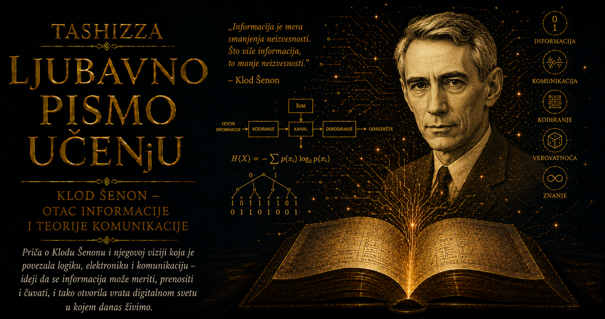

Ljubavno pismo učenju

Hodnicima Bellovih laboratorija, među istraživačima zaokupljenim telefonijom, radarima, elektronskim kolima i vojnim komunikacijama, ponekad je na monociklu prolazio tih, vitak čovek sa nekoliko loptica u vazduhu. Bio je to Klod Elvud Šenon, matematičar čija će teorija promeniti način na koji svet prenosi poruke, zvuk, sliku i svaki drugi oblik podataka. Prizor je mogao delovati kao predah od ozbiljnog naučnog rada, ali je kod Šenona igra pripadala samom središtu mišljenja. Žongliranje, šah, lavirinti, tajne šifre, neobične mašine i matematičke zagonetke bili su različiti ulazi u isto prostranstvo pitanja: kako se iz mnoštva mogućnosti bira put, kako sistem pamti, kako ispravlja grešku i gde se nalazi granica onoga što može učiniti.
Njegova ličnost sjedinjavala je duboku misaonu ozbiljnost i gotovo dečačku razigranost. Mogao je godinama ćutljivo razvijati teoriju izuzetne složenosti, a zatim nedeljama praviti uređaj čija je jedina svrha bila da sam sebe isključi. Podjednako su ga privlačili pouzdanost komunikacionih sistema i mogućnost da se matematikom nadmudri rulet. Korisno i prividno beskorisno za njega nisu pripadali suprotstavljenim svetovima, jer je radoznalost često najplodnija upravo onda kada još ne može da obeća praktičan rezultat. Igra mu je pružala slobodu da pravila rastavi, preuredi i iskuša sve dok se iza pojedinačne zabave ne pojavi opšti zakon.
Klod Elvud Šenon rođen je 30. aprila 1916. godine u Petoskiju, u američkoj saveznoj državi Mičigen, a odrastao je u malom gradu Gejlordu. Amerika njegovog detinjstva ulazila je u doba radija, elektrifikacije i automobila, dok tehnologija još nije bila skrivena u uređajima koje korisnik ne sme da otvori. Žice, motori, baterije i prekidači bili su vidljivi, dostupni i dovoljno razumljivi da radoznalo dete može pokušati da ih rastavi i ponovo sastavi. Okolne šume, duge zime, kućne radionice i život udaljen od velikih centara pružili su mu mir u kome je mogao da istražuje bez ranog pritiska da svoje zanimanje pretvori u određenu profesiju.
Njegov otac, Klod stariji, bio je sudija i poslovan čovek, dok je majka Mej predavala jezike i kasnije postala direktorka srednje škole u Gejlordu. U porodičnom okruženju susretali su se praktičnost, obrazovanje i osećanje odgovornosti prema zajednici. Klodu je ostavljen dragocen prostor da sklapa, pogreši, popravi i ponovo pokuša, bez potrebe da pred odraslima neprestano dokazuje izuzetnost. Takva sloboda postala je jedan od tihih temelja njegove kasnije originalnosti.
Kao dečak pravio je modele aviona, radio-prijemnike, čamce na daljinsko upravljanje i jednostavne električne uređaje. Sa prijateljem je duž ograde između njihovih kuća razapeo improvizovanu telegrafsku vezu. U toj dečačkoj konstrukciji već su se nalazili poruka, kod, signal, fizički kanal i udaljeni primalac, elementi koji će mnogo kasnije dobiti precizno mesto u njegovoj teoriji. Činjenica da misao može biti pretvorena u znak, poslata kroz prostor i ponovo sastavljena na drugom kraju za njega je od početka nosila čaroliju koju tehničko objašnjenje nije umanjivalo.
Šenon je bio povučeniji od mnogih vršnjaka, ali ga je svet neprestano zaokupljao. Više su mu odgovarali predmeti čija se unutrašnjost može otvoriti i upoznati od društvenih situacija čija pravila ostaju neizgovorena. Nije težio da bude vođa grupe, da osvaja pažnju ili da svoju darovitost pretvara u javnu predstavu. Najdublju radost pružao mu je trenutak kada naprava proradi ili kada se ispod prividne zbrke pokaže jednostavan obrazac, a ta unutrašnja samostalnost kasnije će mu omogućiti da dugo ostane uz pitanja koja su drugima delovala neobično, preširoko ili nedovoljno korisno.
Na Univerzitetu Mičigena studirao je matematiku i elektrotehniku, dve oblasti koje su se u njegovom umu prirodno dopunjavale. Elektrotehnika mu je pružala releje, strujna kola i stvarne uređaje, dok mu je matematika davala jezik kojim su odnosi među njihovim delovima mogli biti apstrahovani i provereni. Sposobnost da se neprestano kreće između fizičkog mehanizma i simboličke strukture postala je jedna od njegovih najvećih snaga. Žica i jednačina za njega su često predstavljale isti problem posmatran iz dve različite blizine.
Posle diplomiranja 1936. godine prijavio se za mesto asistenta na Diferencijalnom analizatoru Masačusetskog tehnološkog instituta, velikoj analognoj računarskoj mašini koju je razvio Vanivar Buš. Uređaj je zauzimao čitavu prostoriju i rešavao diferencijalne jednačine pomoću diskova, osovina, zupčanika i elektromehaničkih sklopova. Postavljanje novog problema zahtevalo je fizičko povezivanje delova i usmeravanje toka signala, pa je Šenon dobio priliku da matematičke odnose neposredno vidi utelovljene u mehanizmu.
Vanivar Buš je prepoznao njegovu neobičnu kombinaciju tehničkog i matematičkog dara i podstakao ga da prouči relejna kola analizatora. Inženjeri su takve sisteme često projektovali prateći strujne puteve kroz složene šeme, dok je Šenon u otvorenim i zatvorenim prekidačima prepoznao fizički izraz Bulove algebre. Logičke operacije „i”, „ili” i „ne” mogle su se povezati sa stanjima električnog kola, pa je simbolički izraz postao sredstvo za projektovanje, pojednostavljivanje i proveravanje mreže releja.
Njegova magistarska teza iz 1937. godine često se opisuje kao jedna od najuticajnijih magistarskih teza dvadesetog veka. Šenon nije morao da izmisli ni Bulovu algebru ni električni relej; prepoznao je duboku vezu između dve oblasti koje su se razvijale gotovo nezavisno. U tom povezivanju nalazio se temelj digitalnih kola, jer je pokazano kako logičko rasuđivanje može biti ugrađeno u fizički sistem. Savremeni procesori koriste tranzistore umesto elektromehaničkih releja, ali i dalje počivaju na istom načelu da se složene operacije mogu izgraditi od mnoštva pouzdano uređenih binarnih stanja.
Na Bušov predlog Šenon se potom okrenuo teorijskoj genetici i u laboratoriji Cold Spring Harbor pokušao da odnose među genima izrazi algebarskim metodama. Njegova doktorska disertacija nije ostavila isti trag kao rad o prekidačkim kolima, ali je otkrila širinu njegove radoznalosti i spremnost da se upusti u oblast koja mu prethodno nije pripadala. Posebno ga je privlačio proces u kome se složenost prevodi u simbolički sistem, jer se u takvom prevodu često pojavljivao obrazac koji je u izvornom mnoštvu pojedinosti ostajao skriven.
Godine 1941. pridružio se Bellovim laboratorijama, jednom od najplodnijih istraživačkih središta dvadesetog veka. Matematičari, fizičari, hemičari i inženjeri delili su hodnike, razgovore i probleme, dok je ogromna telefonska mreža stalno donosila nova pitanja o materijalima, elektronici, akustici, verovatnoći, kodiranju i pouzdanosti. Šenonovom temperamentu odgovarala je sredina koja je mogla da podnese duge periode tišine i nevidljivog rada, znajući da jedan istinski dubok rezultat može promeniti čitavu industriju.
Drugi svetski rat pretvorio je komunikaciju u pitanje života, smrti i državne moći. Vojske su morale da prenose naređenja, koordinate, radarske podatke i obaveštajne izveštaje kroz kanale izložene smetnjama, kvarovima i neprijateljskom prisluškivanju. Šenon je radio na sistemima upravljanja protivavionskom vatrom i na matematičkim problemima tajne komunikacije, proučavajući uslove pod kojima presretnuti signal protivniku ne otkriva sadržaj poruke.
Njegov ratni rad doveo ga je do preciznog razumevanja sistema jednokratnog ključa, kod koga se potpuna tajnost postiže samo pod veoma strogim uslovima: ključ mora biti zaista slučajan, dug koliko i poruka, upotrebljen samo jednom i sačuvan u tajnosti. Bezbednost se time mogla izraziti kao matematička osobina količine neizvesnosti koja ostaje napadaču. Kriptografija i buduća teorija informacija rasle su iz iste potrebe da se izmeri odnos između onoga što posmatrač zna i onoga što mu ostaje nedostupno.
Tokom rata Šenon je u Bellovim laboratorijama upoznao Alana Tjuringa, koji je 1943. godine boravio u Sjedinjenim Američkim Državama. Stroga tajnost ograničavala je ono što su mogli da kažu jedan drugome o ratnim zadacima, ali su razgovarali o matematici, računarima i mogućnosti da mašine obavljaju postupke povezane sa mišljenjem. Njihovi kasniji radovi razvijali su se različitim putevima, dok ih je povezivala sposobnost da računar vide kao mnogo više od uređaja za ubrzano računanje.
Posle rata Šenon je dovršio teoriju komunikacije koju je godinama razvijao uz druge obaveze. Rad iz 1948. godine doneo mu je mesto među utemeljivačima digitalnog doba, ali ga slava oblasti koju je otvorio nije pretvorila u čoveka željnog javne uloge. Kada su istraživači iz biologije, lingvistike, psihologije i društvenih nauka počeli da preuzimaju pojmove informacije i entropije, upozoravao je da se precizna matematika ne može preneti u novu oblast samo privlačnim preimenovanjem njenih pojava. Više je cenio jasno utvrđenu granicu modela od velike tvrdnje koju dokazi ne mogu da nose.
Ozbiljnost njegovih naučnih merila nije sputavala njegovu razigranost. U Bellovim laboratorijama vozio je monocikl, ponekad istovremeno žonglirajući, dok su se kolege navikavale na prizor osnivača jedne nove naučne oblasti sa lopticama u vazduhu. Žongliranje ga je zanimalo kao telesna veština i kao matematički problem u kome se susreću vreme leta predmeta, brzina ruku, ritam i broj putanja koje se mogu održavati. Formula mu nije oduzimala zadovoljstvo pokreta, već mu je dopuštala da njegovu unutrašnju pravilnost upozna na još jedan način.
Napravio je i mašinu za žongliranje koja je kontrolisano odbijala metalne kuglice, pretvarajući ritam ljudskih ruku u mehanički obrazac. Takvi uređaji nisu nastajali iz poslovnog naloga niti iz potrebe da odmah dokažu svoju korisnost. Bili su fizičke šale, mali eksperimenti i načini da se apstraktna zamisao proveri u pokretu. Šenonova radionica bila je mesto na kome jednačina nije morala dugo ostati na papiru ako je mogla dobiti telo od metala, magneta, prekidača i motora.
Šah mu je pružio uređeno polje za razmišljanje o mašinskoj inteligenciji. Broj mogućih partija toliko je veliki da računar ne može pregledati svaki put do kraja, pa mora birati koje poteze vredi razmatrati, procenjivati položaje i odbacivati grane koje ne obećavaju uspeh. U radu o programiranju računara za igranje šaha iz 1950. godine Šenon je opisao osnovne pristupe pretraživanju i procenjivanju koji će obeležiti kasniji razvoj računarskog šaha. Igra mu je služila kao jasno ograničena laboratorija za mnogo šire pitanje: kako sistem sa konačnim vremenom i resursima bira razuman postupak među ogromnim brojem mogućnosti.
Jedan od njegovih najpoznatijih izuma bio je Tezej, elektromehanički miš koji je pronalazio put kroz lavirint. Magnetom pokretana figura istraživala je nepoznat raspored i pravila greške, dok je sistem releja ispod površine beležio uspešan put. Pri sledećem prolasku miš je mogao krenuti naučenom stazom, ostavljajući posmatraču utisak da se mala metalna životinja seća. Iza razigrane predstave nalazio se ozbiljan problem: kako iskustvo menja buduće ponašanje sistema i kako se trag uspešnog izbora može sačuvati u fizičkoj memoriji.
Podjednako ga je zabavljala „krajnja mašina”, kutija sa jednim prekidačem. Kada bi znatiželjni posetilac uključio uređaj, poklopac bi se otvorio, mehanička ruka bi izašla, vratila prekidač u početni položaj i ponovo nestala u kutiji. Čitava svrha mašine sastojala se u poništavanju razloga zbog kog je pokrenuta. U tom minimalnom mehaničkom vicu sažeti su Šenonova ljubav prema paradoksu, ekonomiji postupka i uređajima koji svojim ponašanjem komentarišu sopstvenu namenu.
Njegove radionice bile su ispunjene delovima za monocikle, elektronskim sklopovima, žonglerskom opremom, šahovskim figurama, muzičkim instrumentima i nedovršenim izumima. Napravio je rimski kalkulator koji je računao pomoću rimskih brojeva, različite mehaničke igračke, uređaje za rešavanje slagalica i modele kojima je proučavao kretanje. Mnoge zamisli nikada nije objavio niti pokušao da pretvori u proizvod, jer ga je najviše privlačio trenutak prodora u kome problem iznenada otkrije svoju unutrašnju jednostavnost. Kada bi taj trenutak prošao, dugotrajno usavršavanje, administracija i borba za prvenstvo često su gubili čar.
U Bellovim laboratorijama upoznao je Beti Mur, matematičarku koja je radila u grupi za mikrotalasna istraživanja i obavljala složene numeričke proračune. Venčali su se 1949. godine i dobili troje dece, Roberta, Džejmsa i Margaritu. Beti je razumela tehnički svet svoga supruga i njegovu potrebu za dugim periodima povlačenja, dok je istovremeno njihovom porodičnom životu davala stabilnost, toplinu i praktičnu ravnotežu. U njihovoj kući nauka nije živela kao nedodirljiva ozbiljnost, jer su se deca, prijatelji i kolege svakodnevno susretali sa mašinama, igrama, muzikom i eksperimentima.
Dom Šenonovih u Vinčesteru, u Masačusetsu, ličio je na privatni muzej radoznalosti. Posetioci su mogli videti monocikle različitih veličina, elektromehaničkog miša, žonglerske uređaje i kutije čije ponašanje nije bilo lako predvideti. Šenon je svoje izume pokazivao bez velike ceremonije, sa tihim zadovoljstvom čoveka koga najviše raduje trenutak kada gost najpre pogrešno pretpostavi šta će mašina učiniti, a zatim razume šalu skrivenu u njenoj konstrukciji.
Početkom šezdesetih godina sa matematičarem Edvardom Torpom razvio je mali prenosivi analogni računar namenjen predviđanju ishoda ruleta. Putanja kuglice nije potpuno slučajna ako se dovoljno brzo procene njena brzina i kretanje točka, pa je uređaj trebalo da odredi deo ruleta u kome je ishod verovatniji. Sistem se mogao sakriti ispod odeće i preneti procenu pomoću sićušnog zvučnika. Nije obećavao sigurnu dobit, ali je mogao pružiti statističku prednost, a njegova konstrukcija predstavljala je jedan od najranijih poznatih pokušaja da se računar nosi na telu i koristi tokom stvarnog događaja.
Šenona su privlačili i berza, investiranje i odluke pod neizvesnošću. Bio je uspešan ulagač koji je prednost davao kompanijama čiju je tehnologiju razumeo i dugoročnom držanju ulaganja umesto neprekidnom trgovanju. U kocki, tržištu i komunikacionom kanalu prepoznavao je srodno pitanje: šta se razumno može zaključiti kada ishod ostaje nepoznat, ali njegove verovatnoće i ograničenja pokazuju određeni obrazac.
Godine 1956. postao je profesor na MIT-u, gde je nastavio istraživanja uz veliku ličnu slobodu. Nije gradio brojnu školu sledbenika niti je uživao u administrativnoj strani akademskog života. Više su mu odgovarali razgovor sa pojedincem, spontana rasprava i susret sa dobro postavljenim problemom. Jedna njegova kratka primedba mogla je mlađem istraživaču promeniti pravac rada, dok je student koji je očekivao detaljna uputstva ponekad mogao ostati zbunjen njegovom ćutljivošću i zahtevom za samostalnošću.
Među istraživačima sa kojima je bio blizak nalazio se Marvin Minski, budući pionir veštačke inteligencije. Delili su ljubav prema mašinama, slagalicama i projektima koji su ozbiljna naučna pitanja skrivali iza prividne igre. Šenon je sopstvenim primerom pokazivao da maštovitost i naučna strogost mogu pripadati istom umu. Metoda proverava odgovor, ali slobodna mašta često pronalazi pitanje do koga strogo praćenje već utvrđenog puta nikada ne bi stiglo.
Njegova skromnost bila je poznata među kolegama. Primao je najuglednija priznanja iz matematike i inženjerstva, ali je naziv „otac teorije informacija” prihvatao sa nelagodom i humorom. Na konferencijama posvećenim oblasti koju je utemeljio umeo je da deluje kao tih gost među ljudima koji su čitave karijere izgradili razrađujući njegove ideje. Slava mu nije pružala zadovoljstvo uporedivo sa novom zagonetkom, neobičnom analogijom ili uređajem koji je upravo počeo da radi.
Dok je razmišljao, odlučno je štitio vreme i samoću. Zatvarao je vrata, izbegavao sastanke i odbijao zahteve koji su mu remetili koncentraciju, jer je njegov stvaralački postupak zahtevao duge periode u kojima spolja nije bilo vidljivog rezultata. U svetu koji naučni rad često meri brojem publikacija, projekata, sastanaka i javnih nastupa, Šenon je čuvao pravo istraživača da dugo izgleda kao da ništa ne proizvodi dok jedna velika misao postepeno dobija oblik.
Verovao je u pažljiv izbor problema, promenu perspektive, analogiju i pojednostavljivanje koje otkriva suštinu. Tehnička sposobnost imala je punu vrednost tek kada se usmeri prema pitanju koje zaslužuje dug rad. Takav odnos prema nauci objašnjava zbog čega nije objavljivao neprekidno i zbog čega je umeo da napusti projekat čim bi razumeo ono što ga je u njemu privuklo. Količina dovršenih radova bila mu je manje važna od dubine uvida koji može otvoriti čitavu novu oblast.
Tokom sedamdesetih godina postepeno se povlačio iz redovnog akademskog života, dok je teorija informacija nastavila da raste bez njegove neposredne intervencije. Kodovi za ispravljanje grešaka postajali su moćniji, digitalna elektronika manja, računari dostupniji, a komunikacione mreže prostranije. Svet se ubrzano punio uređajima čije je principe Šenon opisao u vreme kada su vakuumske cevi još zagrevale laboratorijske prostorije.
Poslednje godine njegovog života obeležila je Alchajmerova bolest. Čovek koji je matematički proučavao neizvesnost i pravio mašine sposobne da sačuvaju trag prethodnog iskustva počeo je da gubi sopstveno pamćenje. Ta bolna podudarnost zahteva uzdržanost, jer je za Beti i njihovu porodicu bolest predstavljala dugo povlačenje voljenog čoveka iz sveta ideja, humora i naprava koji su sa njim delili.
Klod Šenon umro je 24. februara 2001. godine, u osamdeset četvrtoj godini. Do tada su se bitovi već kretali kroz milijarde uređaja, dok većina ljudi koji su ih svakodnevno koristili nije znala ime čoveka koji je pokazao kako se njihova moć može izmeriti. Takva nevidljivost bila je neobično saglasna sa njegovom prirodom. Nije želeo da bude javno lice budućnosti; mnogo više mu je odgovaralo da pronađe njena pravila, podeli ih sa svetom i vrati se narednoj zagonetki.
Njegov doprinos digitalnom računarstvu započeo je povezivanjem logike i električnih prekidača, dok je njegov doprinos komunikaciji izrastao iz spajanja verovatnoće i poruke. Eksperimenti sa šahom, lavirintom, žongliranjem i ruletom povezivali su mašinu sa izborom, pamćenjem, predviđanjem i učenjem. Iza svih tih naizgled udaljenih poduhvata nalazila se ista sposobnost: izdvojiti osnovne elemente problema, ukloniti pojedinosti koje zaklanjaju strukturu i pronaći pravila dovoljno opšta da važe u mnogim različitim svetovima.
Šenon je razumeo da dobra apstrakcija ne osiromašuje stvarnost, već čuva ono što je u njoj presudno i oslobađa ga prolaznih pojedinosti. Kada je komunikaciju posmatrao nezavisno od značenja pojedinačne poruke, mogao je istim jezikom da proučava telefon, radio, televiziju i računar. Kada je šah predstavio kao prostor mogućih poteza, otvorio je put algoritmima odlučivanja. Kada je žongliranje posmatrao kao ritam putanja, pokazao je da telesna veština može dobiti matematičko objašnjenje, a da pritom sačuva svoju lepotu.
Njegova nauka mogla bi se nazvati matematikom radoznale igre. Počinjala je pitanjima koja su ozbiljnom svetu mogla izgledati sporedno: može li metalni miš zapamtiti lavirint, može li mašina birati šahovski potez, koliko lopti žongler može održavati u vazduhu i može li se neizvesnost izmeriti? Igra mu je dopuštala da bez straha ispita neobičnu zamisao, dok je matematička disciplina kasnije odvajala duboki uvid od prolazne zabave.
Mašine kojima se igrao nose poruku podjednako važnu kao njegove jednačine. Stvaralačka inteligencija ne razvija se samo rešavanjem unapred proglašenih korisnih zadataka. Potrebni su joj dokolica, humor, ruke koje sastavljaju, spremnost da prototip ne uspe i sloboda da se prati pitanje čiji značaj još niko ne ume da dokaže. Mnogi izumi izgledaju ozbiljno tek kada počnu da menjaju svet; dok nastaju, često liče na neobičnu igru jedne strpljive i uporne osobe.
Klod Šenon nam je dao način da izmerimo informaciju, dok njegov život govori o vrednostima koje se ne mogu izraziti brojem bitova: o radosti otkrivanja veze između udaljenih stvari, o pravu uma da luta i o ideji kojoj je dopušteno da sazreva bez obećanja da će odmah postati korisna. Digitalni svet duguje jedan od svojih najdubljih temelja čoveku koji budućnost nije dočekivao svečanim govorima, već lopticama u vazduhu, lemilicom na stolu i novom mašinom spremnom da izvede neku pametnu, očaravajuće nepotrebnu šalu.